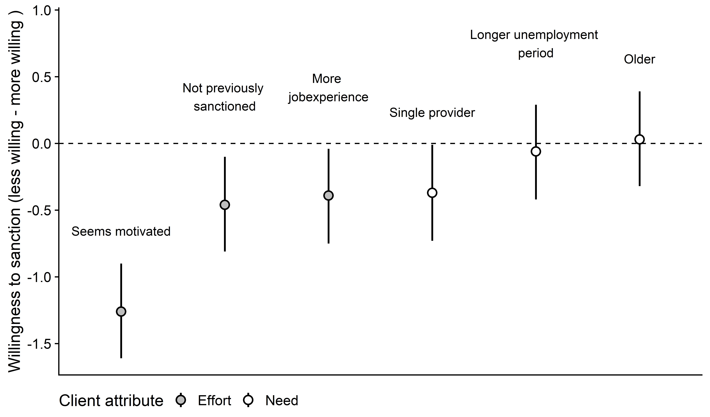

When facing a disobedient client, caseworkers are often required to impose sanctions. However, even when sanctions are explicitly required by law, research shows that caseworkers may turn a blind eye.
Why is that?
In this study, we ask how certain clients can merit themselves to avoid sanctioning. Theorizing from the notion of client deservingness, we develop a theoretical account of how certain client attributes cause frontline workers to bend the rules.
Drawing from a novel conjoint experiment among Danish unemployment caseworkers (n = 407 with 1,210 observations), we show that caseworkers tend to favor stronger clients when bending the rules in clients’ favor. Clients who appear motivated, who have not been sanctioned in the past, and who have more previous job experience are all less likely to be sanctioned.
Our findings reveal a paradox. Although welfare usually targets clients in need, avoiding welfare sanctions seems based on clients’ resources. Consequently, caseworkers’ rule-bending means that ‘the winners take it all’ since the more resourceful clients are also the ones who can get away with disobedience.
This is the key figure from the paper. 